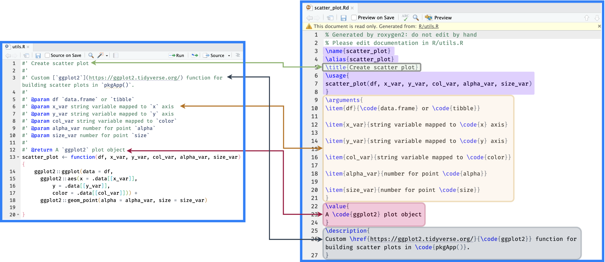
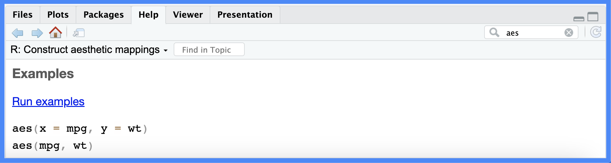
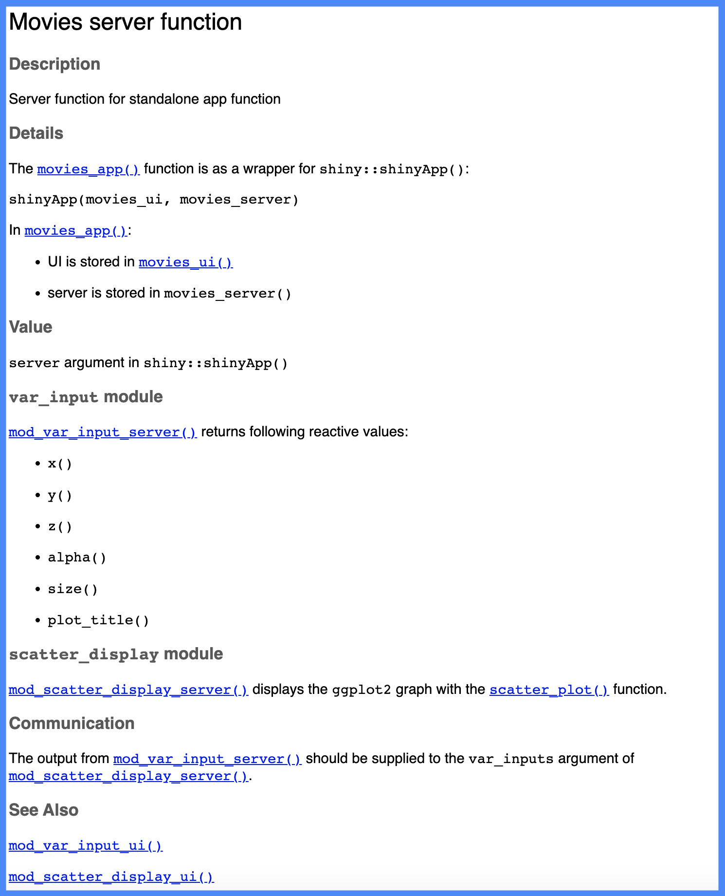

#'
#'
#' roxygen2
Warning!
This section is currently under development. Thank you for your patience.
This chapter covers documenting the functions in your app-package. If you recall, the output from the previous install() returned a message regarding the documentation:

man/ pagesinstall() message
No man pages found in package ‘pkgApp’
We’ll address this message by going over the fundamentals of the roxygen2 syntax–these basics should be included for all the functions in your app-package. I’ll also touch on a few helpful roxygen2 tags specific to the app-packages.
The current state of pkgApp is stored in the main branch (identical to the 06_create-package branch of projApp).
pkgApp/
├── DESCRIPTION
├── NAMESPACE
├── R
│ ├── mod_scatter_display.R
│ ├── mod_var_input.R
│ └── utils.R
├── README.md
├── app.R
├── man
├── movies.RData
├── pkgApp.Rproj
└── www
└── shiny.png
4 directories, 10 files(the rsconnect/ folder from deploying projApp has has been removed)
I strongly encourage checking out the roxygen2 documentation and R Packages for more information on documenting your app-package’s code (and data).
roxygen2 basics
roxygen2 connects the package code (i.e., the .R files in the R/ folder) to its documentation files (i.e., the .Rd files in the man/ folder):

roxygen2roxygen2 creates man/ documentationThe two pieces of roxygen2 syntax to know are comment blocks and tags:
-
Comment blocks are any lines beginning with
#' -
Tags begin with
@#' #' @tag #'
When documenting functions, roxygen2 tags and comment blocks are placed directly above any functions stored in R/.
#'
#' @tag
#'
my_fun <- function() {
}In the following sections, we’ll cover roxygen2 basics using examples for the scatter_plot() function found in R/utils.R.
markdown = TRUE
roxygen2 provides support for markdown formatting in package help files by adding the Roxygen: field in the DESCRIPTION file and setting it to list(markdown = TRUE):
Package: pkgApp
Version: 0.0.0.9000
Type: Package
Title: movies app
Description: A movies data shiny application.
Author: John Smith [aut, cre]
Maintainer: John Smith <John.Smith@email.io>
License: GPL-3
DisplayMode: Showcase
RoxygenNote: 7.2.3
Encoding: UTF-8
Roxygen: list(markdown = TRUE)
@title & @description
The first two sections of roxygen2 documentation are the title and description. These sections don’t require tags–roxygen2 will detect each section as long as there is at least one #' line separating them (and their contents don’t extend past the length indicated in parentheses below):
#' function title (one line)
#'
#' A short description... (one paragraph)
#' The @title and @description for the scatter_plot() function stored in R/utils.R might look like this:
#' Create scatter plot
#'
#' Custom [`ggplot2`](https://ggplot2.tidyverse.org/) function for building scatter plots in `pkgApp()`.
#'
Function
@description and @details
If the contents in the @description for a function requires more complicated formatting than a single paragraph (i.e., multiple paragraphs, lists, etc.), you can use the @details tag:
#' Create scatter plot
#'
#' @description
#' Custom [`ggplot2`](https://ggplot2.tidyverse.org/) function for building scatter plots in `pkgApp()`.
#'
#' @details
#' `scatter_plot()` is a custom `ggplot2` function written to handle string arguments from reactive inputs (i.e., `input$x` or `input$y`).
@param & @return
Document function arguments and outputs with @param and @return:
-
@param: should include the name and description of each function input (i.e., their type and what they do)#' @param name description of its action- Read more here
-
@return: these describe the type (or class) and structure of the function output#' @return type/structure of the output- Read more here
Below are examples for @param and @return in the scatter_plot() function stored in R/utils.R:
#'
#' @param df `data.frame` or `tibble`
#' @param x_var string variable mapped to `x` axis
#' @param y_var string variable mapped to `y` axis
#' @param col_var string variable mapped to `color`
#' @param alpha_var number for point `alpha`
#' @param size_var number for point `size`
#'
#' @return A `ggplot2` plot objectTo view how the roxygen2 syntax will appear in the .Rd file, I’ll document pkgApp:
To reduce the amount of repetitive code, I’ll just be showing the keyboard shortcuts for each devtools function from this point forward
Ctrl/Cmd + Shift + D
I can see the scatter_plot.Rd file is written to the man/ folder:
ℹ Updating pkgApp documentation
ℹ Loading pkgApp
Writing scatter_plot.Rd
Documentation completedR documentation (.Rd) files have a formatting style similar to (La)TeX (but roxygen2 saves us from having to learn this syntax). When we open man/scatter_plot.Rd, we see it contains the following:

.Rd fileroxygen2 graciously generates the scatter_plot.Rd file (and warns us not to edit it by hand). Note the following items were added without needing tags:
\name: the name of the function (as it appears in the index)\alias: used to group “topics” and provides a look-up in the package index-
\arguments: function arguments (header)-
\item: description of argument
-
The following two items are a result of the markdown syntax we used:
\href: used for hyperlinks\code: code formatting

@tag links to .Rd fileroxygen2 tag links to .Rd fileTo view the help file, I can enter ?scatter_plot in the console:
?scatter_plotAnd an informative message tells me that the development version scatter_plot.Rd is being rendered:
ℹ Rendering development documentation for "scatter_plot"
.Rd filePreviewing the development documentation is a great way to verify the content in each .Rd file meets expectations.
@examples
@examples are unique because they include executable code demonstrating a function’s work. In the Posit Workbench IDE, @examples are especially helpful because they come with a ‘single click’ hyperlink (see the Run examples from ggplot2::aes() below):


@examples codeThe syntax to create an example for scatter_plot() is below:
#' @examples
#' scatter_plot(mtcars,
#' x_var = "mpg",
#' y_var = "disp",
#' col_var = "cyl",
#' alpha_var = 0.5,
#' size_var = 3)
Tab-completion for
@tags
If you’re documenting your package functions in Posit Workbench, tab-completion is your friend! The help text displayed with each tag ensures you’re including the correct version (see @example vs. @examples below).

@example
@examplesRead more here.
To preview the @examples in the help file, I’ll document() and open the development .Rd file:
Ctrl/Cmd + Shift + D
?scatter_plot
ℹ Rendering development documentation for "scatter_plot"
@examples in .Rd previewThe Run examples hyperlink won’t be active in the .Rd file preview, but reviewing the code in @examples allows me to correct any errors or typos early.
The scatter_plot() function has a documented Title, Description, Usage, Arguments, Value, and Examples. I consider these tags the minimum documentation to include for functions I’m making available to other users.
Inserting
roxygen2 skeletons
You can insert an roxygen2 skeleton into your function using Code > Insert Roxygen Skeleton

roxygen2 skeletonDocumenting app functions
Your app-package will likely contain at least two functions specific to shiny: modules and a standalone app function. roxygen2 has a few tags that can make the documentation for these functions more informative for readers.
Documenting modules
Below are a few things to consider when documenting module functions:
Modules typically have two functions in a single
.Rfile: one for the UI and a counterpart in the server.Every module function will include at least one
@paramfor the sharedid.Returned objects are critical in
shiny’s reactive context, so I recommend extending the description to include whether or not the returned output is reactive.If the returned output is an input (i.e.
@param) for another function, link to that documentation functions with@seealsoor@family.
Below are some examples from the pkgApp modules.
@seealso
When documenting modules, think of the audience as someone looking to understand the execution path through the application. In pkgApp(), the inputs are collected with the var_input module and then passed to the scatter_display module.
show/hide mod_var_input_ui() roxygen2
#' Variable input module (UI)
#'
#' @description
#' `var_input` collects the following graph inputs:
#' * `input$x`
#' * `input$y`
#' * `input$z`
#' * `input$alpha`
#' * `input$size`
#' * `input$plot_title`
#'
#' @param id UI module id
#'
#' @return module UI (HTML)
#' Use @seealso to connect mod_var_input_ui() to its server function counterpart. The hyperlink to mod_var_input_server() from mod_var_input_ui() is created by placing the destination function in square brackets [fun()]:
show/hide mod_var_input_ui() roxygen2
#' Variable input module (UI)
#'
#' @description
#' `var_input` collects the following graph inputs:
#' * `input$x`
#' * `input$y`
#' * `input$z`
#' * `input$alpha`
#' * `input$size`
#' * `input$plot_title`
#'
#' @param id UI module id
#'
#' @return module UI (HTML)
#'
#' @seealso [mod_var_input_server()]
#' Ctrl/Cmd + Shift + D
@seealso creates a hyperlink readers can use to open the next module in the execution path.

@seealso in mod_var_input_ui()mod_var_input_ui() to mod_var_input_server()In mod_var_input_server(), a link can be made to mod_scatter_display_server() (the module function collecting the returned values) using the square brackets in the @return section (without @seealso):
show/hide mod_var_input_server() roxygen2
#' Variable input module (server)
#'
#' @param id server module id
#'
#' @seealso [mod_var_input_ui()]
#'
#' @return reactive inputs are returned in a `list()`:
#' * `x()`
#' * `y()`
#' * `z()`
#' * `alpha()`
#' * `size()`
#' * `plot_title()`
#'
#' These become in the `var_inputs` argument in [mod_scatter_display_server()]
#' Ctrl/Cmd + Shift + D

@seealso linkvar_input to scatter_display@family
Module functions can also be grouped into families using @family {"description"}. Below is an example of grouping the “scatter plot module functions” into a family:
show/hide mod_scatter_display_ui() roxygen2
#' Scatter plot display module (UI)
#'
#' @param id UI module id
#'
#'
#' @return module UI (HTML)
#'
#' @family {"scatter plot module functions"}
#' @section
The @section tag will create a level two header (##/<h2></h2>) section, which can help organize topics (like how to use an input or argument).
@seealso can also be used to link back to the scatter_plot() utility function:
show/hide mod_scatter_display_server() roxygen2
#' Scatter plot display module (server)
#'
#'
#' @param id server module id
#' @param var_inputs returned reactive list from [mod_var_input_server()].
#'
#' @section Referring to `var_inputs`:
#' Refer to the reactive returned values from `mod_var_input_server()` as:
#' * `var_inputs$x()`
#' * `var_inputs$y()`
#' * `var_inputs$z()`
#' * `var_inputs$alpha()`
#' * `var_inputs$size()`
#' * `var_inputs$plot_title()`
#'
#'
#' @return rendered plot and title output from [scatter_plot()]
#'
#' @family {"scatter plot module functions"}
#' Ctrl/Cmd + Shift + D

@family linkvar_input module and group scatter_display moduleThe figure above shows how the @seealso links can create a path for the graph parameters through the var_input and scatter_display modules. It also demonstrates how @family groups the scatter_display UI and server functions.
The scatter_plot() utility function should also include a @seealso tag for the module function it’s used in.
show/hide scatter_plot() roxygen2
#' Create scatter plot
#'
#' Custom [`ggplot2`](https://ggplot2.tidyverse.org/) function for building scatter plots in `pkgApp()`.
#'
#'
#' @param df `data.frame` or `tibble`
#' @param x_var string variable mapped to `x` axis
#' @param y_var string variable mapped to `y` axis
#' @param col_var string variable mapped to `color`
#' @param alpha_var number for point `alpha`
#' @param size_var number for point `size`
#'
#' @return A `ggplot2` plot object
#'
#'
#' @examples
#' scatter_plot(mtcars,
#' x_var = "mpg",
#' y_var = "disp",
#' col_var = "cyl",
#' alpha_var = 0.5,
#' size_var = 3)
#'
#' @seealso [mod_scatter_display_server()]
#' Ctrl/Cmd + Shift + D

@seealso and @family connectionsThe goal when cross-referencing functions in your app-package is for anyone reading your documentation to follow the links and better understand any modules, their inputs, reactive values, and outputs.
In this case, linking to the scatter_plot() function gives readers an interactive example to preview the output.
Standalone app functions
Splitting the code in app.R into separate functions has multiple benefits:
Developing and loading a function is easier if stored in the
R/folder.Having a dedicated UI, server, and app function means we can develop them independently.
A standalone app function makes storing multiple applications in the same app-package possible.
I’ve split the UI and server from movies_app() into separate movies_ui() and movies_server() below.
movies_ui()
The movies_ui() doesn’t have any arguments–the only change is wrapping the shiny::fluidPage() in shiny::tagList():
movies_ui <- function() {
shiny::tagList(
shiny::fluidPage(
theme = shinythemes::shinytheme("spacelab"),
shiny::titlePanel(
shiny::div(
shiny::img(
src = "shiny.png",
height = 60,
width = 55,
style = "margin:10px 10px"
),
"Movies Reviews"
)
),
shiny::sidebarLayout(
shiny::sidebarPanel(
mod_var_input_ui("vars")
),
shiny::mainPanel(
mod_scatter_display_ui("plot")
)
)
)
)
} I’ll explicitly describe the use of movies_ui() and set @usage to NULL (note the use of a code block). I’ll also use @section to describe each module UI function (and link to the server functions with @seealso).
show/hide roxygen2 for movies_ui()
#' Movies UI function
#'
#' UI function for standalone app function
#'
#' @usage NULL
#'
#' @details
#' The [movies_app()] function is as a wrapper for `shiny::shinyApp()`:
#'
#' ```
#' shinyApp(ui = movies_ui, server = movies_server)
#' ```
#'
#' In [movies_app()]:
#' * UI is stored in `movies_ui()`
#' * server is stored in [movies_server()]
#'
#' @section `var_input` module:
#' [mod_var_input_ui()] is used to collect the following inputs:
#' * `input$x`
#' * `input$y`
#' * `input$z`
#' * `input$alpha`
#' * `input$size`
#' * `input$plot_title`
#'
#' @seealso [mod_var_input_server()]
#'
#'
#' @section `scatter_display` module:
#' [mod_scatter_display_ui()] displays the graph output using [scatter_plot()]
#'
#' @seealso [mod_scatter_display_server()]
#'
#' @return `ui` argument in `shiny::shinyApp()`
#' Ctrl/Cmd + Shift + D

movies_ui()movies_server()
movies_server() is written to be passed to the server argument in shinyApp():
movies_server <- function(input, output, session) {
selected_vars <- mod_var_input_server("vars")
mod_scatter_display_server("plot", var_inputs = selected_vars)
}The documentation for movies_server() is very similar to the Ui function–each module server function is documented in it’s own @section. Still, I’ll include a @section for Communication that describes how values are passed between mod_var_input_server() and mod_scatter_display_server().
show/hide roxygen2 for movies_server()
#' Movies server function
#'
#' Server function for standalone app function
#'
#' @usage NULL
#'
#' @details
#' The [movies_app()] function is as a wrapper for `shiny::shinyApp()`:
#'
#' ```
#' shinyApp(movies_ui, movies_server)
#' ```
#'
#' In [movies_app()]:
#' * UI is stored in [movies_ui()]
#' * server is stored in `movies_server()`
#'
#' @section `var_input` module:
#' [mod_var_input_server()] returns following reactive values:
#' * `x()`
#' * `y()`
#' * `z()`
#' * `alpha()`
#' * `size()`
#' * `plot_title()`
#'
#' @seealso [mod_var_input_ui()]
#'
#' @section `scatter_display` module:
#' [mod_scatter_display_server()] displays the `ggplot2` graph with the [scatter_plot()] function.
#'
#' @seealso [mod_scatter_display_ui()]
#'
#' @section Communication:
#' The output from [mod_var_input_server()] should be supplied to the
#' `var_inputs` argument of [mod_scatter_display_server()].
#
#' @return `server` argument in `shiny::shinyApp()`
#' Ctrl/Cmd + Shift + D

movies_server()movies_app()
The standalone app function (movies_app()) automatically calls shinyApp(), with the movies_ui and movies_server functions supplied to ui and server (without parentheses).
movies_app <- function() {
shiny::shinyApp(ui = movies_ui, server = movies_server)
}The documentation for the standalone app function can be minimal–as long as it provides links to the UI and server.
#' Movies app standalone function
#'
#' Wrapper function for `shiny::shinyApp()`
#'
#' @return shiny app
#'
#'
#' @seealso [mod_var_input_ui()], [mod_var_input_server()], [mod_scatter_display_ui()], [mod_scatter_display_server()]
#'Ctrl/Cmd + Shift + D

movies_app()I’ll change the contents of app.R to the following:
# pkgs <- c("shiny", "shinythemes", "stringr", "ggplot2", "rlang")
# install.packages(pkgs, quiet = TRUE)
# packages ------------------------------------
library(shiny)
library(shinythemes)
library(stringr)
library(ggplot2)
library(rlang)
# movies_app ------------------------------------
movies_app()
This section’s code is in the pkgApp repo’s 02_roxygen2 branch
Now that we’ve documented everything in R/, we’ll run load(), document(), and install():
Ctrl/Cmd + Shift + L
devtools::load_all(".")
ℹ Loading pkgAppCtrl/Cmd + Shift + D
==> devtools::document(roclets = c('rd', 'collate', 'namespace'))
ℹ Updating pkgApp documentation
ℹ Loading pkgApp
Documentation completedCtrl/Cmd + Shift + B
==> R CMD INSTALL --preclean --no-multiarch --with-keep.source pkgApp
* installing to library ‘/path/to/local/install/pkgApp-090c61fc/R-4.2/x86_64-apple-darwin17.0’
* installing *source* package ‘pkgApp’ ...
** using staged installation
** R
** byte-compile and prepare package for lazy loading
** help
*** installing help indices
** building package indices
** testing if installed package can be loaded from temporary location
** testing if installed package can be loaded from final location
** testing if installed package keeps a record of temporary installation path
* DONE (pkgApp)In the Console, we should see the following:
Restarting R session...
> library(pkgApp)The roxygen2 documentation for pkgApp is saved in the 02-roxygen branch. As we can see, calling devtools::document() generates the .Rd files in the man/ folder for each function in the R/ folder:
R/
├── mod_scatter_display.R
├── mod_var_input.R
├── movies_app.R
├── movies_server.R
├── movies_ui.R
└── utils.R
1 directory, 6 filesman/
├── mod_scatter_display_server.Rd
├── mod_scatter_display_ui.Rd
├── mod_var_input_server.Rd
├── mod_var_input_ui.Rd
├── movies_app.Rd
├── movies_server.Rd
├── movies_ui.Rd
└── scatter_plot.Rd
1 directory, 8 filesRecap
Good documentation aims to make it as easy as possible for others (and future you) to understand what your function does and how to use it.
Below is a recap of the topics covered in this chapter.
roxygen2 recap
This chapter covered:
Function
@titleand@description: The@titleshould be a short one-line description of the function, followed by a more detailed paragraph@description. These tags should give users an idea of what the function does (you can also use@details)Arguments (
@param) and outputs (@return): List all function arguments with@param. Include the argument type (e.g., integer, character, etc.) and a brief description of what the argument does. Be sure to mention any default or optional arguments. Function outputs should be listed with@returnand describe the type or class of the object, whether or not it’s reactive, and mention any related functions.Examples:
@examplesprovide executable R code that captures how the function is used in your app-package. These are incredibly valuable for new users trying to understand how a function (and your app-package) works.
App-package specific considerations:
Connect functions with
@seealsoand@family: Use@seealsoto provide links to related functions (i.e., modules) so users can click through a ‘guided tour’ of your application’s code–group similar functions using@family {description}.Give more info with
@sections: Use@sectionto give in-depth explanations and specific details about how a function works, including any information about the@usageor its@params.@usage: This field will be automatically generated byroxygen2, but in some circumstances, it makes sense to set it toNULLand describe a function’s use explicitly.
In the next section, we’ll use roxygen2 to manage our app-package dependencies.